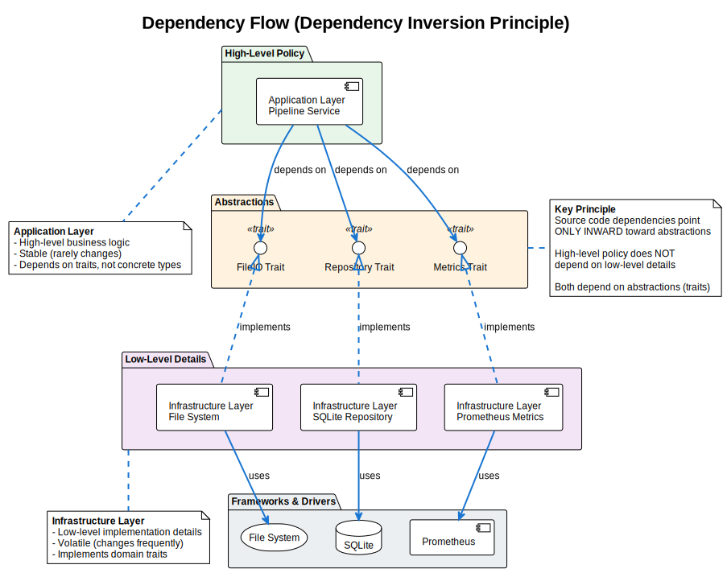

Architecture Overview
Version: 0.1.0 Date: 2025-01-04 SPDX-License-Identifier: BSD-3-Clause License File: See the LICENSE file in the project root. Copyright: © 2025 Michael Gardner, A Bit of Help, Inc. Authors: Michael Gardner Status: Draft
High-level architectural overview of the pipeline system.
Design Philosophy
The Adaptive Pipeline is built on three foundational architectural patterns:
- Clean Architecture - Organizing code by dependency direction
- Domain-Driven Design (DDD) - Modeling the business domain
- Hexagonal Architecture - Isolating business logic from infrastructure
These patterns work together to create a maintainable, testable, and flexible system.
Layered Architecture
The pipeline follows a strict layered architecture where dependencies flow inward:

Layer Overview
Presentation Layer (Outermost)
- CLI interface for user interaction
- Configuration management
- Request/response handling
Application Layer
- Use cases and application services
- Pipeline orchestration
- File processing coordination
Domain Layer (Core)
- Business logic and rules
- Entities (Pipeline, PipelineStage)
- Value objects (FilePath, FileSize, Algorithm)
- Domain services
Infrastructure Layer (Outermost)
- Database implementations (SQLite)
- File system operations
- External system adapters
- Metrics collection
Clean Architecture
Clean Architecture ensures that business logic doesn't depend on implementation details:

Key Principles
Dependency Rule: Source code dependencies point only inward, toward higher-level policies.
- High-level policy (Application layer) defines what the system does
- Abstractions (Traits) define how components interact
- Low-level details (Infrastructure) implements the abstractions
This means:
- Domain layer has zero external dependencies
- Application layer depends only on domain traits
- Infrastructure implements domain interfaces
Benefits
✅ Testability: Business logic can be tested without database or file system ✅ Flexibility: Swap implementations (SQLite → PostgreSQL) without changing business logic ✅ Independence: Domain logic doesn't know about HTTP, databases, or file formats
Hexagonal Architecture (Ports and Adapters)
The pipeline uses Hexagonal Architecture to isolate the core business logic:

Core Components
Application Core
- Domain model (entities, value objects)
- Business logic (pipeline orchestration)
- Ports (trait definitions)
Primary Adapters (Driving)
- CLI adapter - drives the application
- HTTP adapter - future API endpoints
Secondary Adapters (Driven)
- SQLite repository adapter - driven by the application
- File system adapter - driven by the application
- Prometheus metrics adapter - driven by the application
How It Works
- User interacts with Primary Adapter (CLI)
- Primary Adapter calls Application Core through defined ports
- Application Core uses Ports (traits) to interact with infrastructure
- Secondary Adapters implement these ports
- Adapters connect to external systems (database, files)
Example Flow:
CLI → Pipeline Service → Repository Port → SQLite Adapter → Database
The application core never knows it's using SQLite - it only knows the Repository trait.
Architecture Integration
These three patterns work together:
Clean Architecture: Layers with dependency direction
Domain-Driven Design: Business modeling within layers
Hexagonal Architecture: Ports/Adapters at layer boundaries
In Practice:
- Domain layer contains pure business logic (DDD entities)
- Application layer orchestrates use cases (Clean Architecture)
- Infrastructure implements ports (Hexagonal Architecture)
This combination provides:
- Clear separation of concerns
- Testable business logic
- Flexible infrastructure
- Maintainable codebase
Next Steps
Continue to:
- Layered Architecture Details - Deep dive into each layer
- Domain Model - Understanding entities and value objects
- Design Patterns - Patterns used throughout the codebase